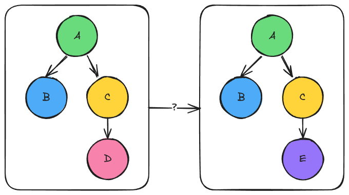

Designing Drivers
This page describes the design of drivers. A driver is a module that owns and
configures the call graph below it. It replaces the convention that a “driver
module” is simply a module whose run_ mostly calls submodules.
What is a Driver?
Drivers are modules that manage the entire call graph below them. They need the ability to set inputs/submodules non-locally. Drivers are essential for hiding the complexity of a call graph from the user, and for allowing multiple configurations of the same call graph to easily be used in the same session.
Why Do We Need Drivers?

Fig. 6 Left the original graph. Right the graph resulting from using module “E”
instead of “D”. The question is how can both graphs be loaded into the
ModuleManager simultaneously?
Consider the two graphs shown in Fig. 6. Let’s call
the left graph “L” and the right graph “R”. If we choose to have graph “L” be
the default graph that is loaded into the ModuleManager the user can go
from graph “L” to graph “R” by telling the ModuleManager to switch the
submodule node “C” uses from node “D” to node “E”. While viable, this is not
necessarily user-friendly as running “R” vs “L” means the user needs to know to
switch “D” to “E”.
If we wanted to make it easy to run both “R” and “L” one option is to make
copies of the “A” and “C” modules. Let “RA” and “RC” respectively be those
copies. Then it becomes possible to have both the “L” and “R” graphs loaded into
the ModuleManager by default. More specifically, the original “A” module
still encodes the “L” call graph and nothing changes. To encode the “R” graph
we wire “RC” to call “E” and “RA” to call “B” and “RC”. Users executing “RA”
then get the “R” call graph. While this solution works, it can be tedious
depending on how nested the graph is. It also can be wasteful because the two
graphs may have a substantial amount of overlap.
In summary: drivers are needed to automate this process. We want a user to be able to tell the driver “I want configuration L” or “I want configuration R” and have the driver handle the wiring details.
A Motivating Example
The initial implementations of QCUP-SCF ran the same SCF loop as an ordinary SCF calculation, but it:
asked the integral modules for uncertain values instead of
doublevalues,replaced the four-center ERIs with an ERI module that attaches an error model,
picked one of several error models, each with its own inputs, and
attaches uncertainty to the converged orbitals and energy.
This took about twenty change_input and change_submod calls on
modules across four plugins. These calls lived in an application, not in any
plugin. This approach has several problems:
There was no single place to look. A user who wanted to change the error model had to know which module, several levels below the SCF driver, held the choice.
The settings were not first-class. They were arguments of a helper function, so PluginPlay could not list them, document them, or record them.
The wiring changed the
ModuleManager’s modules in place. An ordinary SCF and a QCUP-SCF could not be used in the same session, and neither could two QCUP-SCFs with different error models, e.g., for a dimer and its monomers.Every application that wanted QCUP-SCF had to repeat the wiring.
This was the switching problem from Fig. 6, at scale.
How Does a Driver Differ From a Module?
Drivers are a type of module. So they have all the properties of a module. Both drivers and modules can be thought of as the root of a call graph. The key difference is that a driver can set inputs and submodules for all modules in its call graph, while a module can only manage its own inputs and submodules.
Note
In practice, there’s nothing stopping a module from making a copy of its call graph, changing inputs/submodules of the copies, and then running the copies. By using a driver, you don’t have to manage this machinery yourself, and nothing has to be copied.
To facilitate setting non-local inputs/submodules, a driver has a
CallGraphRequest: a list of wiring requests, each naming an input or
submodule of a module below the driver and the value it should have. When the
driver is locked, the ModuleManager resolves the requests into overlay
modules, which point to the modules below the driver and store only what the
driver changed (see State of a Call Graph). The modules the overlays
point to are not changed.
Driver Considerations
Drivers target a plugin, or series of plugins. They are not meant to be fully general.
This means drivers will have some idea of what modules can be below them and what other modules are available to them.
This also means that drivers will assume a certain modularity of the call graph. For example, a driver may assume that two steps are always done as two separate modules, whereas some modules may combine the steps into one module.
A driver can live in a plugin that does not load the other plugins it targets. The modules it needs from them are defaults from preferred providers, so the driver works with whichever providers are loaded (see Drivers and Plugins).
Drivers are modules
There is one concept, not two. A driver is written, configured, run, memoized, and used as a submodule like any other module.
The one exception: the
ModuleManagerresolves a driver’s wiring requests, so a driver must be run through theModuleManager, i.e., withModuleManager::run_asor as a submodule of a module that was. Running a driver withModule::rundirectly throws, unless it has already run through theModuleManager, which resolved its requests.Users do not learn a new API. Settings are module inputs and submodules.
Existing modules are unaffected unless they opt in by deriving from
DriverBase.Whether a module is a driver follows from its type, not from what its constructor happens to call. Module and driver developers choose consciously, since PluginPlay treats the two differently, e.g., when it locks them.
Every setting is exposed
Every setting a driver makes is an input or submodule of the driver, forwarded to the inputs/submodules of the modules below it. The driver’s author picks the default, and the user can change it.
A driver never sets a value the user can not see or change. Fixed values appear only in conditional wiring, where an input of the driver chooses between them.
One place for the user
Users see the settings as attached to the driver and don’t need to know where these settings are used.
Settings are targeted.
Each forwarded setting (input or submodule) names the module(s) and input/submodule it affects.
There is no “settings object” that modules are expected to read. The driver changes a targeted submodule’s inputs/submodules directly, so that module cannot silently ignore the changes.
Settings may stop applying
The user can change the call graph in ways the driver did not anticipate, e.g., by swapping a submodule. This may cause a module to be removed from the call graph, meaning the setting has nothing to change.
Such a setting is “inactive.”” It is skipped and reported, not treated as an error, since the user’s change made it irrelevant.
A setting whose target is not known to the
ModuleManagerat all is an error, since it is almost certainly a typo.A driver author can mark a setting that must take effect as required.
Settings can choose submodules
Some settings choose an algorithm, e.g., which error model to use. These are submodules of the driver, forwarded to the module that uses them. Because they are submodules, the choice is checked against a property type.
Drivers do not change the ModuleManager’s modules
A driver’s settings live in overlay modules, which the driver owns. The inputs and submodules of the modules the overlays point to are not changed, and those modules can still be used directly.
Two drivers that differ only in their settings can be used side by side.
Running a driver locks the modules in its call graph, including modules it wired in, as running any module locks the modules below it.
The call graph preserves sharing
A module that is used in more than one place below a driver gets one overlay from that driver.
Any number of drivers can share a module, as long as they configure it, and everything below it, the same way. Drivers that configure it differently each get their own overlay of it.
Wiring happens once
A driver is wired when it is locked, i.e., when its wiring requests are resolved. Calls after the first reuse the overlays.
To use other settings after a driver is locked, the user copies the driver, as for any other locked module.
Wiring may be conditional
One input of the driver may choose between several sets of values, e.g., turning a feature on may change several modules at once.
Drivers compose
A driver can be used inside another driver. The enclosing driver configures the nested driver through the nested driver’s inputs and submodules.
A driver lets a whole subgraph be treated as one node. To the enclosing driver, a nested driver is opaque: it does not change, or depend on, any module below the nested driver.
Python
Modules written in Python must be able to be drivers.
Alternatives Considered
Before the current design doc, driver modules were a consideration of the module design doc. This is the origin of “Design 1.0” and “Design 2.0” below. Realizing that neither Design 1.0 or Design 2.0 solved the problem, the other alternatives in this section were considered.
Design 1.0
To ensure that driver modules interoperate with other modules, driver modules
also inherit from ModuleBase. We want the
run member of the driver module to have minimal branching, thus logic for
swapping modules should happen before run is called. Our solution is to
introduce ModuleBase::pre_run. This method allows the derived module to
manipulate the input values and submodules run will call before they are
passed to run. By default ModuleBase::pre_run will just return the
inputs and submodules provided to it. To define a driver module, the module
developer overrides the default implementation. For symmetry we also introduce
ModuleBase::post_run which allows the derived class to manipulate the
results before they are given back to the caller of Module::run.
The official C++ API for declaring a module is to use the DECLARE_MODULE
macro. If the user is going to override pre_run or post_run this changes
the declaration needed (i.e., the signature for pre_run and/or post_run
must be part of the declaration). To avoid an API break we introduce a new macro
DECLARE_MODULE_DRIVER, for symmetry we require users to override both
pre_run and post_run if they choose to write a driver (even if they
only need one or the other).
Design 2.0
Note
This is here for historic context, it’s NOT current.
In prototyping design 1.0, it was realized that Module::run looks like:
std::tie(inputs, submods) = module.pre_run(inputs, submods);
auto rv = module.run(inputs, submods);
rv = module.post_run(inputs, submods, rv);
With nothing between pre_run and run (or run and post_run) there
is no reason (aside from partitioning preference) why the module developer can’t
just put their pre-run and post-run logic inside their module’s run overload.
More specifically the same inputs and submods that would go to pre_run can
just be fed to run, then the same logic which would have happened in
pre_run can just happen in run. Similarly all information which would
have been fed into post_run is also available in run.
Ultimately, it was thus realized that pre- and post- conditions can be handled as is. Neither design 1.0 or 2.0 solved the driver problem:
Design 1.0 added
pre_runandpost_runhooks toModuleBaseso that a driver module could change its inputs and submodules before running.Design 2.0 observed that anything
pre_runandpost_runcan do,run_can do, and dropped the hooks.
Design 2.0 is correct about pre- and post-conditions, but it left the switching
problem to the author of each module. A module that wants to run a
different graph has to copy and rewire its submodules inside run_ on every
call. Since unlocked_copy copies one module and shares its submodules
(ModulePIMPL’s copy constructor copies the shared_ptr to each
submodule), rewiring a module three levels down means copying every module on
the path by hand. This tightly couples the module to the graph below it, and
requires a significant amount of boilerplate code to appear in each driver.
A separate recipe class
A ModuleRecipe class, separate from ModuleBase, would name a root
module, hold fixed wiring and typed options, and produce a configured copy of
the root module’s call graph on first use.
This solves the problem, but adds a second concept next to modules, with its own API (
add_recipe,recipe,copy_recipe,change_option) and its own Python ownership rules.Options would be a parallel system to module inputs, with their own type checking, memoization, and provenance.
It leaves “driver module” as an unsupported naming convention, so the term “driver” stays ambiguous.
Hierarchical sub-drivers
Every module in the call graph declares the settings of every module below it
as its own inputs, and forwards them inside run_:
MODULE_RUN(SCFLoop) {
// Submodules are locked and shared, so they must be copied first
auto f_mod = submods.at("Fock matrix builder").value().unlocked_copy();
f_mod.change_input("UQ Type", inputs.at("UQ Type").value<std::string>());
// ... and the Fock builder repeats this for the J and K builders
}
Modules that do not care about a setting, e.g., the Fock matrix builder, gain inputs for it.
Adding a setting changes the inputs of every module above the one that uses it.
Every module on the path copies its submodules on every call, and two parents can set conflicting values on a shared module.
A variant asks each submodule for its settings at runtime. This avoids listing the settings at compile time, but has the same remaining problems.
Promoted inputs
Similar to promoted variables in OpenMDAO, the ModuleManager would link
one input of a module to inputs of other modules:
mm.promote_input("My driver", "Tolerance",
{{"My step", "Tolerance"}, {"A helper", "Tolerance"}});
This changes the
ModuleManager’s modules in place, so it has the third problem from A Motivating Example.
Wired inputs are promoted inputs whose targets are overlays of the
ModuleManager’s modules rather than the modules themselves. Applying them
to overlays removes the reason promoted inputs were rejected.
A wiring function
Each application, or one shared package, provides a function such as
configure_qcup(mm, uq_type, error_model).
This is how QCUP-SCF was first implemented. The settings were not first- class, and the
ModuleManager’s modules were changed in place (see A Motivating Example).
Driver Strategy
The design adds two classes:
CallGraphRequest, an ordered list of wiring requests: what to set on the modules below a driver.DriverBase, derived fromModuleBase, which holds the driver developer’sCallGraphRequestand the functions that fill it.
There is no Driver class derived from Module, and no DriverPIMPL.
A user overrides a driver’s choices through Module, and the user’s
requests are stored in ModulePIMPL, as the user’s inputs are. When a driver
is locked, the ModuleManager resolves its requests into overlay modules,
which the driver owns (see State of a Call Graph).
The CallGraphRequest Class
CallGraphRequest would be declared in
pluginplay/call_graph/call_graph_request.hpp. It is data: it names its
targets by key and resolves nothing itself. A sketch:
class CallGraphRequest {
public:
// Set a target to a fixed value
template<typename T>
WiringRequest& set_input(type::key module_key, type::key input_key,
T value);
WiringRequest& set_submod(type::key module_key,
type::key callback_key,
type::key submod_key);
// Read-only views, in the order the requests were made
const request_list_type& requests() const noexcept;
const chain_list_type& conditional_wiring() const noexcept;
bool empty() const noexcept;
private:
// Only DriverBase, DriverInput, and DriverSubmodule may call these
friend class DriverBase;
friend class DriverInput;
friend class DriverSubmodule;
// Pass the value of the driver's input/submodule on to a target
WiringRequest& forward_input(type::key module_key,
type::key target_input_key,
type::key input_key);
WiringRequest& forward_submod(type::key module_key,
type::key target_callback_key,
type::key callback_key);
// Conditional wiring and memoization
template<typename T>
ConditionalWiring& when(type::key input_key, T value);
void wire_memoization(bool on, std::vector<type::key> except = {});
};
The public functions are the ones a user may call on the user’s request. The
private ones are reached only through DriverBase, i.e., from a driver’s
constructor: forwarding through set_target (see Declaring a Driver),
chains through when (see Conditional Wiring), and the memoization
policy through wire_memoization.
A WiringRequest names one target, i.e., an input or submodule of a module
below the driver, and what it should be set to. Every target is strictly below
the driver. A driver’s own inputs and submodules are set the usual way, by its
developer’s declarations and the user’s change_input and
change_submod.
A driver has two requests, which parallel a module’s inputs:
the developer’s request, held by
DriverBaseand filled in the driver’s constructor; andthe user’s request, held by the driver’s
ModulePIMPLand filled before the driver is locked (see Overriding a Driver’s Choices). The user’s request is locked with the driver, so changing it through a reference held from before the driver was locked throws, rather than being ignored.
The DriverBase Class
DriverBase would be declared in pluginplay/driver/driver_base.hpp.
ModuleBase gets a virtual call_graph_request(), which returns an empty
CallGraphRequest. DriverBase overrides it to return the request its
constructor filled. Putting the request in a class of its own, rather than in
ModuleBase:
makes being a driver a property of the type, so module authors and PluginPlay can tell drivers from other modules;
guarantees that modules which do not derive from
DriverBasekeep today’s behavior; andkeeps
ModuleBase, which every module derives from, almost unchanged.
A sketch of the class:
class DriverBase : public ModuleBase {
public:
// The developer's request, which the constructor filled
const CallGraphRequest& call_graph_request() const override;
protected:
template<typename DerivedType>
explicit DriverBase(DerivedType* self) : ModuleBase(self) {}
// Called from the derived class's constructor. These hide the
// ModuleBase functions of the same name, and return wrappers that can
// also wire the new input/submodule to targets.
template<typename T>
DriverInput add_input(const type::key& key);
template<typename PropertyType>
DriverSubmodule add_submodule(const type::key& key);
// Conditional wiring and memoization
template<typename T>
ConditionalWiring& when(type::key input_key, T value);
void wire_memoization(bool on, std::vector<type::key> except = {});
private:
// The developer's request
CallGraphRequest m_request_;
};
The constructor takes the derived object, as ModuleBase’s does, so that
ModuleBase can still record the derived type. Module::is_driver() is
true exactly when the implementation derives from DriverBase.
The module macros have driver versions, so a driver is declared the same way a module is:
DECLARE_DRIVER(driver_name)declares a classdriver_namethat derives fromDriverBase.DRIVER_CTOR(driver_name)starts the definition of its constructor.DRIVER_RUN(driver_name)starts the definition of itsrun_. Sincerun_has the same signature for drivers and modules, it is an alias ofMODULE_RUN, provided for symmetry.
The DriverInput and DriverSubmodule Classes
ModuleBase::add_input returns the new ModuleInput, so that its
setters can be chained, e.g., add_input<double>("Tol").set_default(1.0).
DriverBase::add_input returns a DriverInput instead: a thin wrapper
that holds a reference to the new ModuleInput and to the driver’s request.
It has the chainable setters of ModuleInput, e.g., set_default,
set_description, add_check, and make_optional, each of which calls
the ModuleInput’s setter and returns the wrapper. It adds:
set_target(module_key, target_input_key), which requests that the value of this input of the driver is also set as the inputtarget_input_keyof the modulemodule_keybelow the driver; andset_required_target(module_key, target_input_key), which does the same and marks the request as required (see Missing Targets).
DriverSubmodule does the same for SubmoduleRequest, which
DriverBase::add_submodule returns, with set_description,
set_target, and set_required_target. It also adds
set_default(submod_key), which names the module bound to the submodule if
the user binds none (see Declaring a Driver).
The wrappers only forward and record, so they hold no state of their own and can be discarded once the chain ends.
Declaring a Driver
A driver’s constructor declares its own inputs and submodules with
add_input and add_submodule, as a module’s does, and wires each of them
to the modules below the driver with set_target:
DRIVER_CTOR(MyDriver) {
satisfies_property_type<MyPT>();
add_input<double>("Tolerance")
.set_description("Convergence threshold of the step")
.set_default(1.0e-8)
.set_target("My step", "Tolerance")
.set_target("A helper", "Tolerance");
add_submodule<HelperPT>("Helper")
.set_default("A helper")
.set_required_target("My step", "Helper");
}
Every setting is a driver input or submodule. There is no way to wire a fixed value at the top level of the constructor, so every value the driver passes down is one the user can see and change. Fixed values appear only in conditional chains (see Conditional Wiring).
Several targets.
set_targetmay be called several times on one input or submodule, once per target.Other declarations.
when(input_key, value)starts a conditional chain, andwire_memoization(on, except)requests whether the modules below the driver memoize, except for the modules whose keys are inexcept.
A driver’s submodule can not be bound in its constructor, since modules are
found by key. The default named with DriverSubmodule::set_default is
therefore recorded in the request, and the ModuleManager uses it when it
resolves the driver’s requests, if the submodule is still unbound. The user
changes it with change_submod, as for any submodule. The default should be
a module of the driver’s own plugin (see Drivers and Plugins).
Module keys may be qualified keys, as for ModuleManager::at, e.g.,
{"integrals", "ERI4"}.
A wired input must not be an input of a property type the driver satisfies.
Property-type inputs are passed on every call, but the requests, and so the
wired value, are resolved once, before the first call. Property-type inputs
are added by satisfies_property_type, not by add_input, so they have no
set_target. Wired inputs are set with change_input before the driver is
locked.
A wired input or submodule is still an ordinary input or submodule of the
driver, and the driver’s run_ may use it too.
Overriding a Driver’s Choices
Most of a driver’s choices are its inputs and submodules, which the user
changes with change_input and change_submod. For the rest, e.g., a
choice the driver does not expose, the user adds fixed values to the call graph
request, through Module:
auto& request = mm.at("My driver").call_graph_request();
request.set_submod("Module A", "Submodule", "My module");
Module::call_graph_request() returns the current call graph request, which
is stored in the driver’s ModulePIMPL. It throws if the
module is not a driver, since only drivers resolve requests, or if the module
is locked. The request exposes only set_input and set_submod
requests.
The user’s requests are applied after the developer’s, so they win (see
Locking a Driver). Changing the ModuleManager’s module instead, e.g.,
with mm.change_submod("Module A", ...), changes the module the driver’s
overlay points to. A driver that targets the same input or submodule
overrules that change in its overlay.
Conditional Wiring
Some settings change several things at once. set_target can not express
this, since it passes a value through unchanged. Other settings only matter
for one choice, e.g., a threshold that only a screened method reads.
when(input_key, value) starts a chain of branches. otherwise(input_key,
value) starts a further branch with its own condition, and otherwise()
starts a final branch that applies if no condition holds. A branch holds:
fixed values, set with
set_input(module_key, input_key, value)andset_submod(module_key, callback_key, submod_key); andforwarded inputs and submodules of the driver, with
forward_input(module_key, target_input_key, input_key)andforward_submod(module_key, target_callback_key, callback_key). These work likeset_target, but only when the branch is taken.
The two kinds take the same arguments, except that a forward ends with the key of the driver’s input or submodule where a fixed value ends with the value. For example:
add_input<bool>("Enable feature").set_default(false);
add_input<double>("Feature tolerance").set_default(1.0e-6);
when("Enable feature", true)
.set_submod("Module A", "Submodule", "Feature module")
.forward_input("Feature module", "Tolerance", "Feature tolerance")
.otherwise()
.set_submod("Module A", "Submodule", "Plain module");
“Feature tolerance” only matters when “Enable feature” is true, so it is
forwarded in that branch rather than with set_target.
First match. The conditions are tested, when the driver is locked, in the order the branches were declared. Only the first branch whose condition holds is applied. If none holds and there is no
otherwise(), nothing in the chain is applied.One owner per target. Within the developer’s request, a target is set by at most one thing: one
set_target, or one chain. The branches of a chain may all set or forward to the same target, which is the point of a chain. Breaking this rule throws, so a driver’s own settings never compete and need no precedence rule. The rule is checked on the keys in the driver’s constructor, and again on the modules when the requests are resolved, which catches two keys for the same module, e.g.,"X"and{"plugin", "X"}. The user’s requests are exempt, since overriding the developer’s is their purpose.Readable. Everything one input changes is written in one place, so a reader, and PluginPlay, can answer “what does the input change?”
CallGraphRequest::conditional_wiring()lists each chain with its branches and their conditions.Settings of branches not taken. An input or submodule of the driver that is only forwarded in branches that are not taken has no effect. If the user changed it, i.e., its value differs from the default its developer gave it, this is reported as an inactive setting, e.g.,
"My driver": "Feature tolerance" has no effect because no branch that forwards it was taken. If it has its default value, nothing is reported, since the user did not ask for anything that was ignored. An input or submodule that is also used byset_targetis never reported this way.Same rules as other settings. Inactive wiring requests in the branch that is taken are reported like any other (see Missing Targets), and
required()on a branch marks every wiring request in it as required. Requests in branches that are not taken are not checked. The user’s requests are applied after the chains, so users can still override them.Same restriction on inputs. A condition’s input must not be an input of a property type the driver satisfies, for the same reason as wired inputs.
Because a chain is data rather than code, it is exported to Python as is,
e.g., self.when("Density fitting", True).set_submod(...), and it can be
recorded with the driver’s results. It also tells a reader, and PluginPlay,
which of the driver’s inputs and submodules matter for which choice.
Complicated Choices
A condition tests one input against one value. A choice that depends on several inputs, or that needs other logic, belongs in a driver of its own:
If the affected modules share a parent that can be swapped, write a driver for each configuration of that parent. The outer driver wires a submodule for the parent, and the user picks which driver fills it. Each configuration is then type-checked by its property type, and the rules for nested drivers apply.
Otherwise, write a driver whose
run_dispatches between submodules, one per configuration, based on its inputs.
To enable arbitrary logic we would need to support lambdas, which are opaque to PluginPlay. Turning the logic into a driver makes it visible so that it can be read, tested, and reused by PluginPlay.
Locking a Driver
A driver is locked when it is first run through the ModuleManager. As for
any module, locking a driver locks the modules below it. Before that, the
ModuleManager resolves the driver’s requests (see
State of a Call Graph for where the results live):
Find the region. The driver’s region is the set of modules reachable from it without passing through another driver. Nested drivers are in the region, so that the driver can set their inputs, but the modules below them are not.
Bind defaults. Each submodule of the driver that has a default from
DriverSubmodule::set_default, and that is still unbound, is bound to its default module in the submodule map the driver runs with. The driver’s own submodule requests are not changed.Apply the requests to overlays of the modules in the region, in this order:
the developer’s
set_targetrequests, and the branch of each chain whose condition holds (see Conditional Wiring), in the order they were declared. These never set the same target, so their order does not matter;the user’s requests, in the order they were added; and
the memoization policy.
Within the first two, the requests that set submodules are applied before the requests that set inputs, since they decide which modules are in the region. Requests of either kind are applied in the order above. A request whose target a later request removes from the region is reported as inactive.
A module whose input or submodule changes gets an overlay, and so does every module between it and the driver, since their submodules must be bound to the overlays. A module bound in several places gets one overlay. A request which sets a target to the value it already has changes nothing, so it makes no overlay. Targets that are missing are handled as described in Missing Targets.
Resolve nested drivers. Each nested driver in the region resolves its own requests in the same way, with the inputs the enclosing driver gave it (see Nested Drivers).
Lock every module the driver reaches, overlays and originals, then the driver. Locking computes each module’s fingerprint for memoization (see State of a Call Graph).
A set_submod request, a submodule default, or the module bound to a
wired submodule may be a module that was not reachable from the driver
before. That module and everything below it become part of the region.
Finding a module by key is done by the ModuleManager, so a driver does not
need a way to find modules itself.
When the driver runs, its run_ gets the submodule map that binds its
submodules to the overlays, so the changes are seen at every level below the
driver. The overlays are ordinary Module objects, so they run through the
usual Module::run.
Missing Targets
Consider a driver written with the left graph of Fig. 6 in mind, which sets inputs of module “D”. Before running the driver, the user swaps module “C” for a module “F” that does not call “D”. When the driver is locked, “D” is not in its region, and the settings that target “D” have nothing to change.
Making this an error would forbid the very changes drivers are meant to support. Ignoring it silently would hide typos and modules that a newer version of a plugin renamed. Locking therefore tells the cases apart:
The key is unknown. The
ModuleManagerhas no module with the target’s key. This is an error. The message names the driver, the wiring request, and the key. The exception is a qualified key whose plugin is not loaded, which is treated as the next case (see Drivers and Plugins).The module exists but is not in the region. This includes a module that an earlier setting cut off from the driver, e.g., by rebinding the submodule that called it. The setting is inactive and is skipped. Locking logs one message per inactive setting through the runtime’s logger, e.g.,
"My configurable driver": "Tolerance" has no effect because "A helper" is not in the call graph. A target field that does not exist on a module that is in the region, e.g., a misspelled input key, is an error.The setting belongs to a branch that is not taken. The requests of the branch are not checked at all. The driver’s inputs and submodules that only that branch forwards are reported as inactive only if the user changed them (see Conditional Wiring).
A setting that only matters for one choice of submodule, e.g., a threshold
of a screened method, would be inactive in every other configuration of the
driver. Forwarding it in the branch that makes that choice, rather than with
set_target, keeps the default configuration free of such reports.
A wiring request marked required() must take effect. If it would be
inactive, locking throws, with the same message that would have been logged.
Driver authors use this for settings where doing nothing would give wrong
results, rather than results the setting does not apply to.
The inactive settings are stored on the driver’s ModulePIMPL when its
requests are resolved, and Module::inactive_settings() returns them. It
returns an empty list for modules that are not drivers. Seeing which settings
would be inactive before locking, without paying for a calculation, is left to
the read-only CallGraph (see Designing the CallGraph Class).
A setting that targets “D” still applies if “D” is reachable some other way, e.g., if “F” also calls “D”. Targets name modules, not places in the call graph (see Identifying Modules in the Call Graph).
Identifying Modules in the Call Graph
A target is identified by the key of the module in the ModuleManager, and
refers to that module’s overlay in the driver’s region. The ModuleManager
finds the module by key, and keeps a map from each module to its overlay while
it resolves the driver’s requests.
Copying a Locked Driver
A driver’s settings are applied to overlays, never to the driver, so a locked
driver still has the bindings, inputs, and user’s requests the user gave it.
unlocked_copy, and therefore ModuleManager::copy_module, gives a
driver with those, and no overlays. The copy resolves its requests again when
it is locked. To use other settings after a driver is locked, the user copies
it:
mm.copy_module("QCUP SCF", "QCUP SCF taylor");
mm.change_input("QCUP SCF taylor", "UQ Type", "taylor model");
Because the requests are resolved when the driver is locked, rather than when
the driver is added, changes the user makes to the ModuleManager’s modules
beforehand, e.g., a basis-set threshold, are picked up by the driver.
Nested Drivers
A driver lets a whole subgraph be treated as one node. A driver’s region may contain other drivers, and three rules keep this simple:
Encapsulation. A driver’s targets must not be only reachable below a nested driver. Targeting such a module is an error. An enclosing driver configures a nested driver through the nested driver’s inputs and submodules, which the nested driver then wires. Requests are resolved from the outermost driver inward, so the nested driver’s wiring uses the values the enclosing driver gave it.
Opaque nested drivers. A module may be reachable both directly from the enclosing driver and below a nested driver, e.g., because both use a ubiquitous module. If the enclosing driver targets it, the change applies to the enclosing driver’s overlay only. Below the nested driver the module runs as the nested driver configures it. This is intended: to the enclosing driver, the nested driver is opaque, and that it reuses the module is an implementation detail. The same module may therefore run with two configurations in one calculation. Making this an error would make nesting drivers that use common modules almost impossible.
Overlays of nested drivers. A nested driver whose inputs or submodules the enclosing driver sets gets an overlay, like any other module. The overlay resolves the nested driver’s requests with those values, and owns the overlays it makes.
Drivers and Plugins
A driver is added to a plugin like any other module. It usually needs modules
from other plugins, e.g., a driver in MyPlugin that needs
ProviderA’s "A helper". The plugin’s preferred providers handle this,
so a driver can live in a plugin that does not load the other plugins it
targets.
Choices from other plugins are submodules of the driver. A module from another plugin is chosen by a submodule of the driver, wired to where it is used, rather than by a default in the driver’s constructor. The plugin sets its default with
default_submod_from, as for any of its modules:// In the driver's constructor add_submodule<MyPT>("Driver"); // the module this driver configures add_submodule<HelperPT>("Helper").set_target("My step", "Helper"); // In MyPlugin's constructor add_module<MyConfigurableDriver>("My configurable driver"); change_submod("My configurable driver", "Driver", "My driver"); default_submod_from("provider_a", "My configurable driver", "Helper", "A helper");
Missing providers leave the driver not ready. If no preferred provider for a submodule is loaded, the submodule stays unset, and the driver is not ready, like any other module with an unset submodule. Running it fails with the list of unset submodules, so the user knows which modules to load or supply.
Defaults in the constructor only name the plugin’s own modules. The default of a driver’s submodule and the module of
set_submodare named directly and have no fallback when a provider is not loaded, so they should be modules from the driver’s own plugin.Targets may be in other plugins. Targets are the driver’s assumptions about the call graph (see Driver Considerations), so they often name modules from other plugins. Such targets should use qualified keys, e.g.,
{"provider_a", "A helper"}, so that another plugin with a module of the same key can not make them ambiguous. If the target’s plugin is not loaded, the setting is inactive, as if the user had swapped the module out (see Missing Targets). The user may have supplied a replacement from another plugin on purpose.Defaults are applied before requests are resolved. The
ModuleManagerapplies defaults inwire_defaults, and a driver’s requests are resolved when the driver is locked, which is afterwire_defaults. The resolution therefore sees every default that the loaded plugins set, both for the driver’s own submodules and for the modules below it.
Python
Python modules derive from pluginplay.ModuleBase. Python drivers derive
from pluginplay.DriverBase, which is exported with a trampoline class like
ModuleBase’s. In __init__ they call add_input and
add_submodule, which return the Python bindings of DriverInput and
DriverSubmodule, e.g.,
self.add_input("Tolerance").set_default(1e-8).set_target("My step",
"Tolerance"), and when and wire_memoization. CallGraphRequest and
Module.call_graph_request() are exported, so Python users override a
driver’s choices as C++ users do. No new ownership rules are needed, since
drivers are modules and overlays are Module objects. Both the C++
ModuleManager::run_as and the Python ModuleManager.run_as call
ModuleManager::resolve_drivers, which resolves the requests of every driver
reachable from the module about to run, so both run drivers with their
settings.
Further Considerations
A Driver class. An earlier version of this design had a
Driverclass, derived fromModule, for the user’s API, and aDriverPIMPLfor the user’s requests. Both were dropped. The user’s API is one function onModule,call_graph_request(), and the user’s requests live inModulePIMPLnext to the user’s inputs.Inspecting a resolved driver. A read-only
CallGraph, to list what a driver will run and which settings would be inactive before it is locked, is left for later (see Designing the CallGraph Class).Memoization. An overlay reuses results of the module it points to exactly when its state, and the state of everything below it, is the same. This relies on the fingerprints of State of a Call Graph, which replace submodule UUIDs in memoization keys.
Running a driver outside the ModuleManager.
Module::runon a driver that has not run through theModuleManagerthrows, since the driver’s requests name modules by key. Most requests name modules that are already reachable from the driver, and each module’s name is its key, so they could be resolved without theModuleManager. Only a module named byset_submodor a submodule default, that is not already reachable, truly needs it. This is left for later, since names are only unique within a plugin.Fixed wiring. Earlier versions of this design had fixed wiring at the top level of the constructor, which set a target to a value the user could not see. It was removed because every such value is better as an input or submodule of the driver, with the value as its default. Fixed wiring protected nothing, since users could overrule it anyway, and it competed with conditional wiring for the same targets, which needed a precedence rule. Fixed values remain only in conditional chains and the user’s requests.
Wiring functions. Earlier versions of this design wired a driver’s inputs with
wire_input(module_key, target_input_key, input_key), plus an overload taking a default value that also added the input. The two forms were told apart only by their number of arguments, so a string default could be mistaken for a key.set_targeton the input thatadd_inputreturns replaces both, and keeps everything about an input of the driver in one statement.Inputs that run_ reads. A driver’s
run_may read an input that is also forwarded only in branches. PluginPlay can not see whatrun_reads, so it reports such an input as inactive when its branches are not taken and the user changed it. An input thatrun_reads should not also be forwarded only in branches, or a way to mark it as read byrun_is needed.Wiring callbacks. A virtual
wire_(inputs, wiring)onDriverBase, the wiring counterpart ofrun_, could see all of a driver’s inputs and add wiring requests with arbitrary logic. It is left out for now in favor of dispatch drivers (see Complicated Choices), since a callback can not be inspected without running it. It can be added later if dispatch drivers prove cumbersome.Paths. Targets refer to a module by key. Paths such as
"Loop/Fock matrix builder/J builder"may be useful to target one place in the call graph and are left for later.Existing driver modules. Modules like
"SCF Driver"keep working unchanged. They become drivers in this sense only if their class is changed to derive fromDriverBase, e.g., by switching fromDECLARE_MODULEtoDECLARE_DRIVER. Whether some of them should is a separate question for each repository.